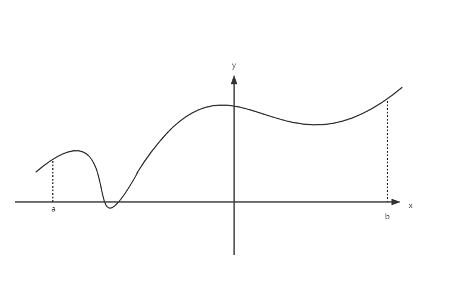
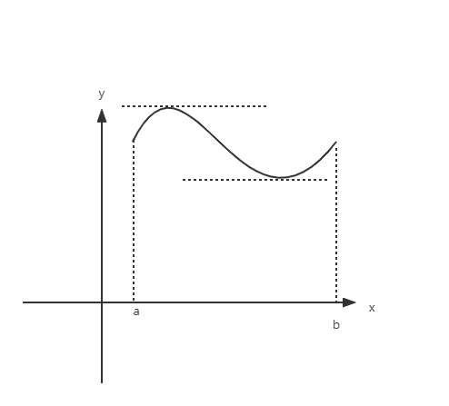
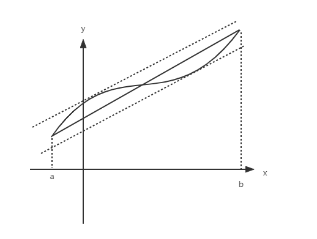

§3.1 微分中值定理
一、罗尔定理
- 若 f(x) 在 U(x0) 有定义，∀x∈U(x0)f(x)≥f(x0)(f(x)≤f(x0))，则称 f(x0) 为极小值（极大值），x0 为极小值点（极大值点）
极值和最值

[a,b] 中存在唯一最大、最小值，存在4个极值
证明：
f′(x0)=f−′(x0)=f+′(x0)
f−′(x0)=x→x0−limx−x0f(x)−f(x0)≤0f+′(x0)=x→x0+limx−x0f(x)−(x0)≥0
得证
- 罗尔定理：若 f(x) 满足：
- 在 [a,b] 上连续
- 在 (a,b) 上可导
- f(a)=f(b)
- 则存在 ξ∈(a,b) 有 f′(ξ)=0

证明：
- 若最值在端点取得，f(a)=Mf(b)=m
M=m⇒f(x)=C⇒f′(x)=0
- 若至少有一个最值在 (a,b) 内取得
f(ξ)=M，其中 ξ 为极大值点
∵ξ 是可导点
∴f′(ξ)=0
- 缺少条件1，取 f(x)={x0≤x<10x=1
- 缺少条件2，取 f(x)=∣x∣
- 缺少条件3，取 f(x)=x0≤x≤1
均不存在满足条件的 ξ
例题
- y=f(x) 在 (a,b) 内可导，且 x→a+limf(x)=x→b−limf(x) ，证明：存在 ξ 使得 f′(ξ)=0
解：
设
F(x)=⎩⎨⎧x→a+limf(a+)f(x)x→b−limf(b−)x=aa<x<bx=b
此时 F(a)=F(b)，满足罗尔定理
∴ 存在 ξ 使得 f′(ξ)=0=F′(ξ)
- 证明 x5−5x+1=0 有且仅有一个小于1的正实数根
证：
- 存在性：f(x)=x5−5x+1f(0)=1f(1)=−3<0，由零点定理，存在 ξ∈(0,1)，f(ξ)=0
- 唯一性：假设存在 ξ1=ξ2∈(0,1) 有 f(ξ1)=f(ξ2)=0，f(x) 在 [ξ1,ξ2] 连续，(ξ1,ξ2) 可导，f(ξ1)=f(ξ2)
⇒∃η∈(ξ1,ξ2) 有 f′(η)=5η4−5=0 ，与 η∈(0,1) 矛盾
∴ 只存在唯一实根
- 若 f(x) 在 (−∞,+∞) 可导，且 f′(x)=0 无实根，证明 f(x)=0 至多只有一个实根
证：设有 ξ1=ξ2 两实根，f(ξ1)=f(ξ2)=0
f(x) 在 [ξ1,ξ2] 连续，(ξ1,ξ2) 可导 ⇒∃ξ∈(ξ1,ξ2)，f′(ξ)=0，与已知矛盾
∴f(x)=0 至多有一个实根
二、拉格朗日中值定理

若 f(x) 满足：在 [a,b] 内连续且在 (a,b) 内可导，则存在 ξ∈(a,b) 使得 f′(ξ)=b−af(b)−f(a)
证明
f′(ξ)−b−af(b)−f(a)⇔f′(ξ)−[b−af(b)−f(a)x]′∣x=ξ⇔F(x)f(x)−b−af(b)−f(a)x′∣x=ξ=0=0=0
F(a)=b−abf(a)−af(b)=F(b)F(x)在[a,b]连续F(x)在(a,b)可导⎭⎬⎫∃ξ∈(a,b),F′(ξ)=0
推论
- f(x) 在区间 I 可导，且 f′(x)=0⇒f(x)=C
证：∀x1,x2，
f(x1)−f(x2)=f′(ξ)(x1−x2)=0(x1−x2)=0
f(x1)=f(x2)⇒f(x)=C
f(x)=arcsinx+arccosx=2π(x∈[0,2π])
f(x)=arccotx+arctanx=2π(x∈[0,2π])
- f(x),g(x) 在 I 上可导，且 f′(x)=g′(x)⇒f(x)−g(x)=C
例题
- f(x) 在 [a,b] 连续，(a,b) 内可导，证明：∃ξ∈(a,b) 使 b−abf(b)−af(a)=f(ξ)+ξf′(ξ)
证：设 F(x)=xf(x)
F′(ξ)=∣f(x)+xf′(x)∣x=ξ=f(ξ)+ξf′(ξ)=b−abf(b)−af(a)
- 证明 1+hh<ln(1+h)<h，h>−1 且 h=0
证：h>01+h1<hln(1+h)<1
h−0ln(1+h)−ln(1+0)=1+ξ1<10<ξ<h
−1<h<0ln(1+h)=ln(1+h)−ln1=1+θh1⋅h(0<θ<1)
θ<θh<01+h<1+θh<1
h>1+θhh>1+hh，即得证
三、柯西中值定理
若 f(x),g(x) 满足：在 [a,b] 内连续，在 (a,b) 内可导，且对于任意 x∈(a,b) 都有 g′(x)=0 ，则存在 ξ∈(a,b) 使得 g(b)−g(a)f(b)−f(a)=g′(ξ)f′(ξ)
证明
考虑 {u=f(x)v=g(x)，∃ξ∈(a,b)
dvdu∣x=ξ=g′(x)f′(x)∣x=ξ=g′(ξ)f′(ξ)=g(b)−g(a)f(b)−f(a)，得证
例题
- f(x) 在 [a,b] 连续，(a,b) 可导（a>0）。证明：∃ξ∈(a,b) 使得 f(b)−f(a)=ξf′(ξ)lnab
证：令 g(x)=lnx，f(x),g(x) 满足柯西定理的条件
∴∃ξ∈(a,b) 使得 g′(ξ)f′(ξ)=lnb−lnaf(b)−f(a) 即 ξ1f′(ξ)=lnabf(b)−f(a)，得证
- 求证 ∃ξ∈(1,e) 使得 sin1=cos(lnξ)
证：设 f(x)=sin(lnx),g(x)=lnx 在 (1,e) 上满足柯西定理的条件
∴∃ξ∈(1,e)g′(ξ)f′(ξ)=lne−ln1sin(lne)−sin(ln1)=sin1
g′(x)=x1f′(x)=cos(lnx)⋅x1左侧=cos(lnξ)